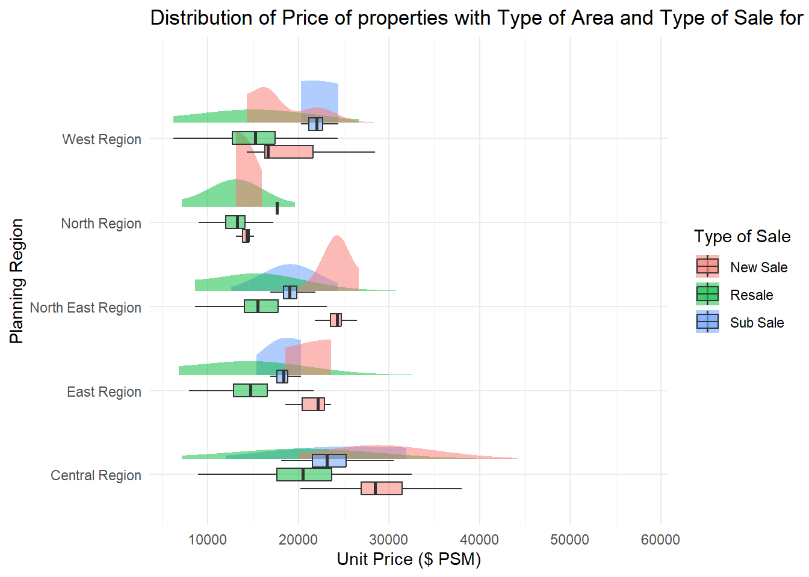

pacman::p_load(ggrepel, patchwork, ggthemes, ggridges, hrbrthemes, colorspace,ggdist, tidyr, tidyverse, htmltools)Take-home Exercise 1
1 Overview
1.1 Background
There are two major residential property market in Singapore, namely public and private housing. Public housing aims to meet the basic need of the general public with monthly household income less than or equal to S$14,000. For families with monthly household income more than S$14,000, they need to turn to the private residential market.
1.2 The Task
Assuming the role of a graphical editor of a median company, this post aims to reveal the insights from private residential market and sub-markets of Singapore for the 1st quarter of 2024.
1.3 The Data
To accomplish the task, transaction data of REALIS will be used. A complete set of the private residential property transaction data from 1st January 2023 to 31st March 2024 will be used.
1.4 The Designing Tool
The data is processed by using appropriate tidyverse family of packages and the statistical graphics are prepared using ggplot2 and its extensions.
2 Loading Packages
3 Reading Data
realis_data_2023Q1 <- read_csv("data/ResidentialTransaction20240308160536.csv")
realis_data_2023Q1 <- mutate(realis_data_2023Q1, Quarter='2023-Q1')
realis_data_2023Q2 <- read_csv("data/ResidentialTransaction20240308160736.csv")
realis_data_2023Q2 <- mutate(realis_data_2023Q2, Quarter='2023-Q2')
realis_data_2023Q3 <- read_csv("data/ResidentialTransaction20240308161009.csv")
realis_data_2023Q3 <- mutate(realis_data_2023Q3, Quarter='2023-Q3')
realis_data_2023Q4 <- read_csv("data/ResidentialTransaction20240308161109.csv")
realis_data_2023Q4 <- mutate(realis_data_2023Q4, Quarter='2023-Q4')
realis_data_2024Q1 <- read_csv("data/ResidentialTransaction20240414220633.csv")
realis_data_2024Q1 <- mutate(realis_data_2024Q1, Quarter='2024-Q1')realis_data <- rbind(realis_data_2023Q1, realis_data_2023Q2, realis_data_2023Q3, realis_data_2023Q4, realis_data_2024Q1)
realis_data$Month <- substr(realis_data$`Sale Date`,3,6)3.1 Identify Duplicates
sum(duplicated(realis_data))[1] 03.2 Identify Missing Values
sum(is.na(realis_data))[1] 6Removing the identified records with missing values.
realis_data <- realis_data %>%
drop_na()
sum(is.na(realis_data))[1] 04 Deriving insights based on Visual Analysis
4.1 Number of Properties sold for each type with previous quarters.
As our objective is to analyse property market in 2024 Q1, let us first compare the number of properties sold for each property type. We attempt to answer the questions: “Have the number of properties sold increased or decreased compared to the same period previous year? What about the previous quarter?”
We do this by creating faceted bar chart. First the ggplot(), geom_plot() are used to create a bar chart indicating number of properties of each type of sale(Sub Sale, Resale, New Sale) sold. Then we use the facet_wrap() function and passing in Property type to generate the faceted bar chart. The ggtitle(), theme(), xlab(), and ylab() functions in the ggplot2 package are then used to make aesthetic adjustments to the plot.
# | eval: false
ggplot(realis_data, aes(x = Quarter, fill =`Type of Sale`)) +
geom_bar() +
theme_minimal() +
theme(axis.text.x = element_text(angle = 45, hjust = 1)) +
facet_wrap(~`Property Type`,scales = "free_y") +
ggtitle(label = "Number of properties sold for each type per quarter") + ylab("Number of properties sold") + xlab("Quarter")
Observation: Based on the plot we observe that, for semi-detached houses and terrace houses the number of properties sold in 2024 Q1 is almost same as the same period last year(2023 Q1) with slight increase compared to 2023-Q4. For executive condos there has been a significant jump of almost 300 in number of properties sold in 2024-Q1 compared to 2023-Q1. This rise can be attributed to more number of new sales as the resale and sub sales almost remained the same. For detached houses, the number of properties dropped from roughly 60 to 40. The drop was majorly due to fewer number of Resale properties sold. For Condos the number of properties in 2024-Q1 dropped to around 1900 compared to 2200 in 2023-Q1. The drop was majorly due to lower new sales. For Apartments, there was a slight rise in number of properties sold compared to 2023-Q1 due to higher new sales.
4.2 Visualizing distribution of Unit Price of properties based on Type of Sale and Type of Area.
As our objective is to analyse property market in 2024 Q1, let us compare the unit price of properties based on the type of area and the type of sale. We attempt to answer the questions: “Are properties on land more expensive as compared to strata? How about comparison of prices within subsale, resale and new sales”
We do this by creating half eye plot. First the ggplot(), stat_halfeye(), geom_boxplot() are used to create a half eye plot and boxplot of price of properties with each type of sale. We use type of Area as fill to see how area plays a part. The ggtitle(), theme(), xlab(), and ylab() functions in the ggplot2 package are then used to make aesthetic adjustments to the plot.

p1 <- ggplot(data = realis_data_2024Q1,
aes(y = `Type of Sale`,x = `Unit Price ($ PSM)`, fill = `Type of Area`)) +
stat_halfeye(adjust = 5,
justification = -0.2,
.width = 0,
point_colour = NA,alpha = 0.5) +
geom_boxplot(width = .20,
outlier.shape = NA,alpha = 0.5) +
ggtitle(label= "Distribution of Price of properties with Type of Area and Type of Sale") +
theme_minimal()
p1Observation: Based on the plot, we see that the median and mode of the distrbutions clearly indicate thatNew Sales are the most expensive followed by Sub Sale and Resales being the least expensive in terms of buying property. Sub sale properties are available only on Strata. In general, the median unit price of properties on land is higher than median unit price of properties on strata. This holds both for New Sales as well as Resales. The median unit price of New Sales for strata is higher than both strata and land properties for Resale. There are properties priced above 25000 $ PSM on Strata for New sale. These properties are more expensive than the ones on land for New sale.
4.3 Distribution of Property Prices across regions in Singapore
As our objective is to analyse property market in 2024 Q1, let us compare the unit price of properties across regions in Singapore and the type of sale. We attempt to answer the questions: “Which regions are the most expensive and least expensive in terms of unit prices to buy properties in? How do the unit prices compare across regions and type of sale?”
We do this by creating half eye plot. First the ggplot(), stat_halfeye(), geom_boxplot() are used to create a half eye plot and boxplot of price of properties with different regions. We use Type of Sale as fill to see how prices vary with type of sale. The ggtitle(), theme(), xlab(), and ylab() functions in the ggplot2 package are then used to make aesthetic adjustments to the plot.

options(repr.plot.width = 40, repr.plot.height = 100)
p1 <- ggplot(realis_data_2024Q1,
aes(x = `Planning Region`,
y = `Unit Price ($ PSM)`, fill=`Type of Sale`)) +
stat_halfeye(adjust = 7,
justification = -0.2,
.width = 0,
point_colour = NA,
alpha = 0.5) +
geom_boxplot(width = .50,
outlier.shape = NA, aes(x = `Planning Region`,
y = `Unit Price ($ PSM)`, fill=`Type of Sale`), alpha = 0.5 ) +
coord_flip() +
theme_minimal() +
ggtitle(label= "Distribution of Price of properties with Regions in Signapore and Type of Sale for 2024 Q1")
p1Observation: Based on the plot, we see that the median and mode of the distributions clearly indicate that properties in the Central region are most expensive in terms of Unit Price ($ PSM) in terms of types of New Sale and Resale. The Sub sale properties in the Western region have a higher median unit price than the ones in all other regions. Also the Subsale median price here is higher than the New Sale median price. This needs to be investigated further. Properties in the North region are the least expensive based on the median prices for New sale and Resale. Deeper dive based on median and mode shows that purchasing a new property in the northern region might actually be cheaper than purchasing a resale property in the Central, Western or North-eastern region. There is a higher variation in the price of properties in the price of properties in the central region compared to all other regions.
5 Summary
Our analysis of the private property market for Singapore based on Regions, Type of Sale, Area of Sale, yielded several insights. Overall, our analysis revealed uneven distributions of unit prices with different regions, type of sale, area of sale. Our analysis also revealed how many properties of each property type were sold in 2024 Q1 compared to 2023 Q1 and other quarters.
Key Findings:
There has been a gradual reduction in number of properties of Detached houses sold in every quarter. The reason behind this needs to be investigated.
The number of properties of executive condos sold has grown significantly in 2024 Q1 as compared to 2023 Q1. A deeper study into the reasoning could reveal further insights.
Unit Prices of properties on Land are higher as compared to prices on Strata in 2024 Q1.
Unit Prices for New Sales are higher than Sub sales which in turn are higher than resales in 2024 Q1.
Unit Prices of properties are highest in Central Region whereas they are lowest in the North region. Sub sale prices in the Western Region are surprisingly higher than New Sales in the region and highest overall among other regions.
There is a correlation between prices of private properties across various regions, across various types of sale and type of area of the property.
Recommendations for future research:
Confirmatory data analysis: Future studies should incorporate statistical tests to validate the findings from this exploratory data analysis and establish more definitive correlations and causation.
Exploring Additional Variables: A more exhaustive analysis that includes a wider range of variables could yield deeper insights into private property market. Understanding factors that drive prices of properties could help gain more insights and recommend a property to a particular class of purchasers based on demographics the appropriate property type.
Understanding customer demographics: Understanding the customer demographics like age, income, gender, educational purpose will help reveal what type of customers will purchase a specific type of property in a region and how they would react to changes in market prices.
By addressing these areas, future research can provide a more comprehensive understanding of the various factors that contribute to price variation in private property market in Singapore and customer behavior.